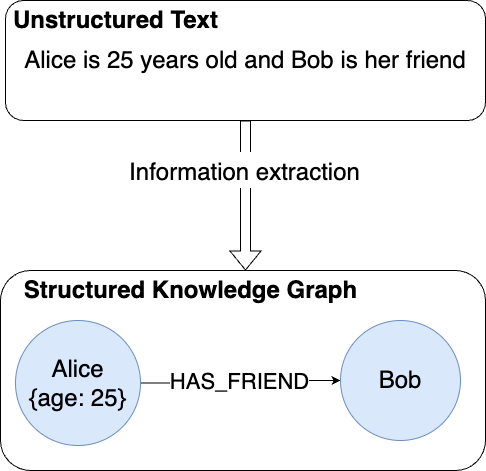
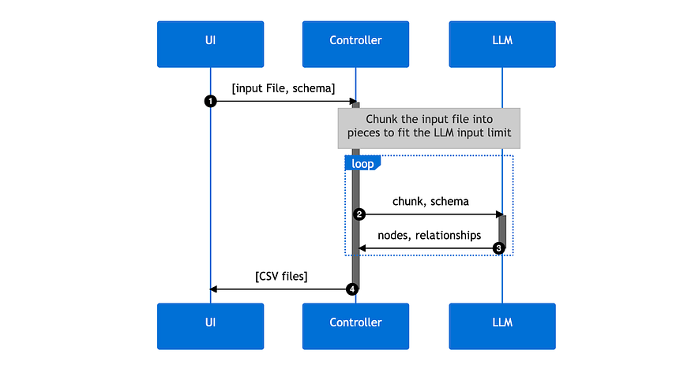
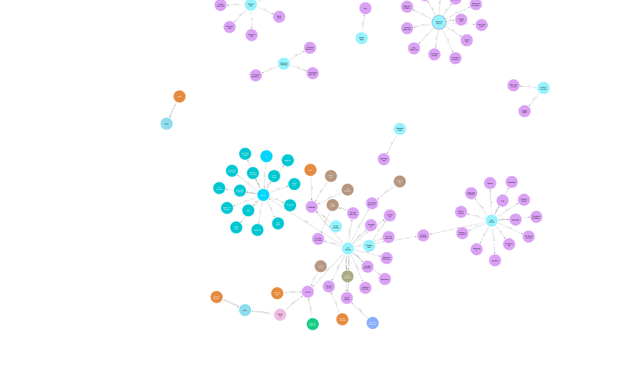

Knowledge Graphs From Unstructured Text
Construct Knowledge Graphs From Unstructured Text
This is the fifth blog post of Neo4j's NaLLM project. We started this project to explore, develop, and showcase practical uses of these LLMs in conjunction with Neo4j. As part of this project, we have constructed and publicly displayed demonstrations in a [GitHub repository]{.underline}, providing an open space for our community to observe, learn, and contribute. Additionally, we have been writing about our findings in a blog post. You can read the previous four blog posts here:
-
[Fine-tuning vs. Retrieval-augmented generation]{.underline}
-
[Knowledge Graphs & LLMs: Real-Time Graph Analytics]{.underline}
This blog post will explore a use case we investigated during our project: extracting information from unstructured data. Organizations have long faced challenges in extracting meaningful insights from unstructured data. Such data encompasses textual content, images, audio, and other non-tabular formats, holding immense potential yet often remaining difficult to use due to its inherent complexity. Our primary focus in this post will be to extract information from unstructured text by converting it into nodes and relationships.
{width="6.268055555555556in" height="6.268055555555556in"}
Illustration from [Imagine.art]{.underline} of "extracting information from unstructured data"
Recent years have witnessed significant advancements in natural language processing techniques, revolutionizing the transformation of unstructured data into valuable knowledge. With the emergence of powerful language models like OpenAI's GPT models and leveraging the power of machine learning, the process of converting unstructured text data into structured representations has become more accessible and efficient.
One such representation is knowledge graphs, which offer a robust framework for representing complex relationships and connections among various entities. They provide a structured representation of the data, enabling intuitive querying and exploration of the information contained within. This structured nature allows for advanced semantic analysis, reasoning, and inference, facilitating more accurate and comprehensive decision-making processes.
{width="5.066666666666666in" height="4.908333333333333in"}
Example of Knowledge Extraction Pipeline
We will explore how Large Language Models (LLMs) have simplified the conversion of unstructured data into knowledge graphs, using an approach that utilizes the language skills of LLMs to perform nearly all parts of the process. The process can be divided into three steps:
-
Extracting nodes and edges
-
Entity disambiguation
-
Importing into Neo4j
Let's walk through each of these steps:
1. Extracting nodes and relationships: To tackle this problem, we take the simplest possible approach, where we pass the input data to the LLM and let it decide which nodes and relationships to extract. We ask the LLM to return the extracted entities in a specific format, including a name, a type, and properties. This allows us to extract nodes and edges from the input text.
However, LLMs have a limitation known as the context window (between 4 and 16,000 tokens for most LLMs), which can be easily overwhelmed by larger inputs, hindering the processing of such data. To overcome this limitation, we employ a strategy of dividing the input text into smaller, more manageable chunks that fit within the context window.
Determining the optimal splitting points for the text is a challenge of its own. To keep things simple, we have chosen to divide the text into chunks of maximum size, maximizing the utilization of the context window per chunk. Additionally, we introduce some overlap from the previous chunk to account for cases where a sentence or description spans across multiple chunks. This approach allows us to extract nodes and edges from each chunk, representing the information contained within it.
To maintain consistency in the labeling of different types of entities across chunks, we provide the LLM with a list of node types that were extracted in the previous chunks. Those start forming the extracted "schema." We have observed that this approach enhances the uniformity of the final labels. For example, instead of the LLM generating separate types for "Company" and "Gaming Company," it consolidates all types of companies under a "Company" label.
One notable hurdle in our approach is the problem of duplicate entities. Since each chunk is processed semi-independently, information about the same entity found in different chunks will create duplicates when we combine the results. Naturally, this issue brings us to our next step.
2. Entity disambiguation: We now have a set of entities. To address the issue of duplication, we employ LLMs once again. First, we organize the entities into sets based on their type. Subsequently, we provide each set to the LLM, enabling it to merge duplicate entities while simultaneously consolidating their properties. We use LLMs for this since we don't know what name each entity has been given. For example, the initial extraction could have ended up with two nodes: (Alice {name: "Alice Henderson"}) and (Alice Henderson {age: 25}). These reference the same entity and should be merged to a single node with both the name and age property. We use LLMs to accomplish this since it's great at quickly understanding which nodes actually reference the same entity.
By iteratively performing this procedure for all entity groups, we obtain a structured data set that is ready for further processing.
3. Importing the data into Neo4j: In the final step of the process, we focus on importing the results we got from the LLM into a Neo4j database. This requires a format that Neo4j can understand. To accomplish this, we parse the generated text from the LLM and transform it into separate CSV files, corresponding to the various node and relationship types. These CSV files are subsequently mapped to a format compatible with the [Neo4j Data Importer tool]{.underline}. Through this conversion, we gain the advantage of previewing the data before initiating the import process into a Neo4j database, harnessing the capabilities offered by the Neo4j Importer tool.
{width="6.268055555555556in" height="3.323611111111111in"}
Overview of the application
Putting this all together, we have created an application consisting of three parts: a UI to input a file, a controller that executes the previously explained process, and an LLM that the controller talks to. This demo application can be found [here]{.underline}, and the source code can be found on [GitHub]{.underline}.
We also created a version of this pipeline that works essentially in the same way but with the option to include a schema. This schema works like a filter where the user can restrict which types of nodes and relationships and which properties the LLM should include in its result.
NaLLM Graph Construction Demo
nallm-experiments.ew.r.appspot.com
If you are interested in learning more about generative AI and knowledge graphs, I would suggest taking a look at [Neo4j's page about generative AI]{.underline}.
Demonstration
I tested the application by giving it the Wikipedia page for the [James Bond franchise]{.underline} and inspected the generated knowledge graph.
{width="6.268055555555556in" height="3.688888888888889in"}
Example of the resulting graph
The provided graph subset showcases the generated graph, which, in my opinion, provides a reasonably accurate depiction of the Wikipedia article. The graph primarily consists of nodes representing books and individuals associated with those books, such as authors and publishers.
However, there are a few issues with the graph. For instance, Ian Fleming is labeled as a publisher rather than an author for most of the books he wrote. This discrepancy may be attributed to the difficulty the language model had in comprehending that particular aspect of the Wikipedia article.
Another problem is the inclusion of relationships between book nodes and the directors of films with the same titles, instead of creating separate nodes for the movies.
Finally, It's worth noting that the LLM appears to be quite literal in its interpretation of relationships, as evidenced by using the relationship type "used" to connect the James Bond character with the cars he drove. This literal approach may stem from the article's usage of the verb "used" rather than "drove."
A full video of the demonstration can be found here:
Demo of KG Construction
Problems
For a demonstration, this approach worked fairly well, and we think it shows that it's possible to use LLMs to create knowledge graphs. However, we acknowledge certain issues need to be addressed within this approach:
-
Unpredictable output: This is inherent to the nature of LLMs. We do not know how an LLM will format its results. Even if we ask it to output in a specific format, it might not obey. This might cause problems when trying to parse what it generates. We saw one instance of this while chunking the data: Most of the time, the LLM generated a simple list of nodes and edges, but sometimes the LLM would number the list. Tools to work around this are starting to be released, such as [Guardrails]{.underline} and [OpenAIs Function API]{.underline}. It's still early in the world of LLM tooling, so we anticipate that this will not be a problem for long.
-
Speed: This approach is slow and often takes several minutes for just a single reasonably large web page. There might be a fundamentally different approach that can make the extraction go faster.
-
Lack of accountability: There is no way of knowing why the LLM decided to extract some information from the source documents or if the information even exists in the source. The data quality of the resulting knowledge graph is, therefore, much lower than the graph created by processes not leveraging LLMs.
Summary
This blog post explored a use case of Large Language Models with Neo4j to extract insights from unstructured data by converting it into a structured representation in the form of a knowledge graph.
We discussed a three-step approach focusing on extracting nodes and relationships, entity disambiguation, and importing the data into Neo4j. By utilizing LLMs, anyone can automate the extraction process and efficiently process large amounts of unstructured data.
However, there are challenges to address, including unpredictable output formatting, speed limitations, and the lack of accountability. Despite these issues, the combined power of LLMs and Neo4j offers a promising solution for unlocking the hidden value in unstructured data, even for non-technical users.